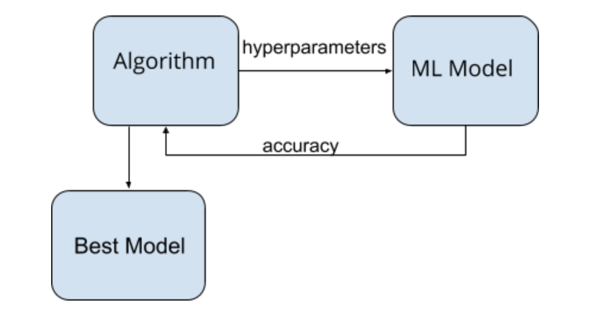

We are going to optimize the task of searching for the optimal hyper parameters for a fixed machine learning problem of semantic segmentation in images. There are multiple approaches (such as grid search, random search, bayesian optimization, gradient-based optimization, evolutionary optimization, reinforcement learning) that can be used in order to solve this task. Additionally, the hyper parameter space is huge (learning rate, loss function, batch size, number of hidden units and layers, activation functions just to name a few). We aim to explore and speed up different techniques and compare the resulting model accuracy along with the time taken by the techniques to find the best model.
Semantic segmentation describes the process of associating each pixel of an image with a class label (such as flower, person, road, sky, ocean, or car). One of the major application for semantic segmentation today in the autonomous driving cars. In order to not focus our time too much on the problem domain, we are going to start with an existing deep learning model that acts as our baseline and run our algorithms on this. Meta Learning is defined as the problem of learning how to learn. Hyperparameter optimization is the problem of choosing a set of optimal hyperparameters for a learning algorithm. The high level idea of the task is given in the diagram below. This is applicable in general to any algorithm. The algorithm begins with an initial set of hyper parameters and continues to explore how the machine learning model behaves with different hyper parameters. After a certain amount of exploration, the algorithm gives the best model to use for the task.
The traditional algorithms like grid search, and random search are trivially parallelizable. We aim to quickly set up the framework and get these algorithms running.
It is not quickly obvious on how to parallelize the bayesian optimization and gradient-based optimization algorithms, but there is existing literature that describes how to optimize them [1, 2]. These algorithms provides a decent amount of challenge to understand and implement.
The main challenging part of our project lies in coming up and implementing the parallelization techniques for the the evolutionary search and reinforcement learning algorithms.
Evolutionary hyperparameter search algorithm does the following. It randomly generate tuples of hyperparameters and creates multiple versions of them by sampling random noise. It then evaluate the performance of the model under these hyperparameters tuples and ranks the hyperparameter tuples by their effectiveness. It replaces the the worst-performing hyperparameter tuples with new hyperparameter tuples. The previous three steps are repeated until a satisfactory performance is reached or until the algorithm performance is no longer improving.
There are various challenges in trying to parallelize this algorithm. We need to deal with the memory contention that results when accessing the common tuples and also the way to communication and parallel this task to take advantage of locality is not immediately obvious. Moreover, we also need to synchronize after each iteration in order to evaluate the convergence criteria and also to generate a fresh set of hyper parameters to search.
The main idea of Reinforcement learning (RL) is to keep adapting to the environment (our model) over time in order to maximize the long-term reward (model accuracy). It is not straightforward to parallelize the deep learning models within this framework. Stochastic gradient descent assumes the training samples to be independent and identically distributed while most often, this is not the case. Though replay memory can be used to combat this, parallelizing this by reducing the memory contention and exploiting locality is a challenge. Also, trying to simply run multiple instances asynchronously in parallel does not work since we need to ensure that the parameter updates are synchronized and the gradients are not too stale for each instance.
However, we think that similar optimization strategies can be used in both evolutionary search and reinforcement learning algorithms. First, we can optimize the common instructions that are executed every iteration by exploiting SIMD parallelism. We can explore a shared memory model in both these techniques, to ensure parallel updates and good locality of memory (need to deal with cache-coherency issues). We can also experiment with the frequency of synchronization, and explore the trade-offs between the performance (finding the best model as soon as possible) and accuracy (the accuracy of the model).
Since the hyper parameter search space is also huge, we can also start with smaller number of hyperparameters at the start and gradually increase them. We can also use some heuristics at the start such as quickly determining the most important hyper parameters automatically and then fine-tune them.
We will be utilizing CPU (4-core 2.7 GHz Intel Core i5 Processors) and GPU (NVIDIA GeForce GTX 1080 GPU) for this task. We need to use GPU since we want to minimize the time taken for the model to train once we chose a set of hyper parameters. We will be running all our algorithms on the CPU. We will benefit from having access to GPUs. For the machine learning task of image semantic segmentation, we will be using an existing codebase in pytorch framework [3]. We plan to implement the rest of algorithms from scratch.
Since we do not have a baseline model at this time, we are not sure of the precise performance goals right now. But we primarily want to explore the tradeoff between performance and accuracy in all the algorithms and explore the maximum speedup achievable for each algorithm.
The model will be using pytorch deep learning framework and will be run on CUDA. We will be exploring both python and C++ as a platform choice for all our algorithms during our first week.